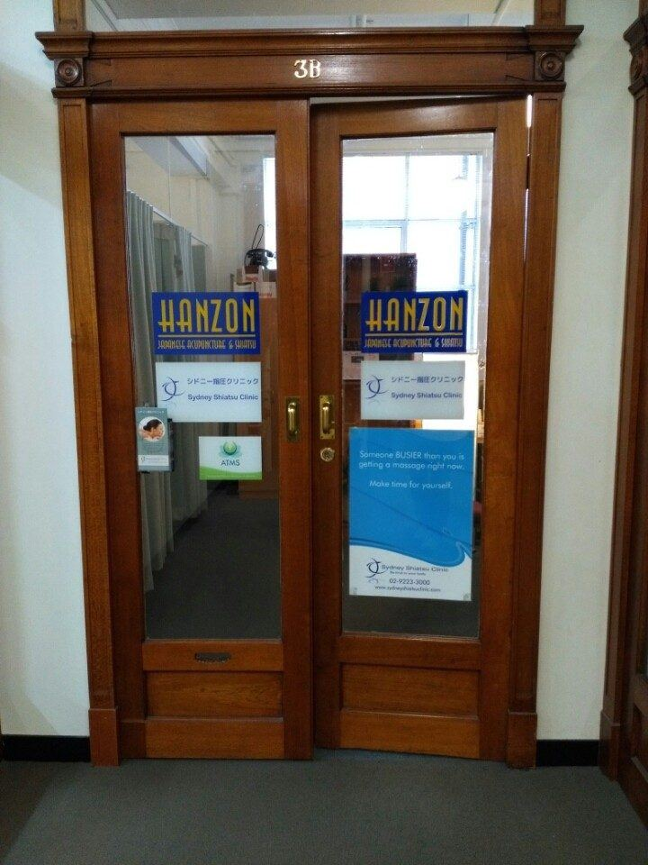

押す、という治療。シドニー指圧クリニック
指圧・鍼灸・マッサージ ｜ シドニー Town Hall
指と手のひらだけで、体の状態を探り、そのままツボを押す。日本とオーストラリアで資格を取ったセラピストが施術します。
2003年から、シティの真ん中で
指圧●鍼灸●リメディアル・マッサージ●リフレクソロジー●リンパ・マッサージ●骨盤矯正●美容鍼●スポーツ・マッサージ●
指圧●鍼灸●リメディアル・マッサージ●リフレクソロジー●リンパ・マッサージ●骨盤矯正●美容鍼●スポーツ・マッサージ●
一
つらいところを、
押してください。
体の図の朱い点を押してみてください。合う施術と料金が出ます。
三
料金。
CBDのホテルへの出張はプラス $50。時間外、日曜・祝日は15%のサーチャージが加算されます。料金はオーストラリアドルです。
四
施術する人。
オーナー ／ 鍼灸指圧師
川村 勝仁かわむら かつひと
鍼灸、あん摩マッサージ指圧の国家資格を取得後、仙台の整形外科医院理療科で鍼灸師として勤務。東北地方を中心に、スポーツトレーナー（専門は肩、スローイング）を兼任しました。鍼灸の専門は運動器系と婦人科疾患系。日曜から金曜に在院しています。
- オーストラリア移住後、鍼灸指圧クリニック HANZON を立ち上げ。アイスホッケーチームの選手兼トレーナー。
- 1月、シドニー指圧クリニックのオーナーに就任。
AHPRA CMR0001739710 ／ ATMS 15605
トレーナーとして支えたチーム
- JR東日本 硬式野球部全国大会 準優勝
- 東北大学 アメフト部東北大会 優勝
- 仙台育英 硬式野球部東北大会 優勝
- 東邦銀行 女子ソフトボール部二部リーグ 優勝
- YKK 女子サッカー部全国社会人大会 優勝
理恵りえ
指圧セラピスト ／ リメディアル・マッサージ・セラピスト ／ リンパ・マッサージ・セラピスト
五
Dymocksビルの、
九階へ。
タウンホールから歩いて5分ほど。George Street 428番地です。

- 住所
- Level 9, Suite 3B, Dymocks Building
428 George St, Sydney NSW 2000
Googleマップで開く - 営業時間
- 月〜金10:00 – 19:00土・日・祝10:00 – 17:00